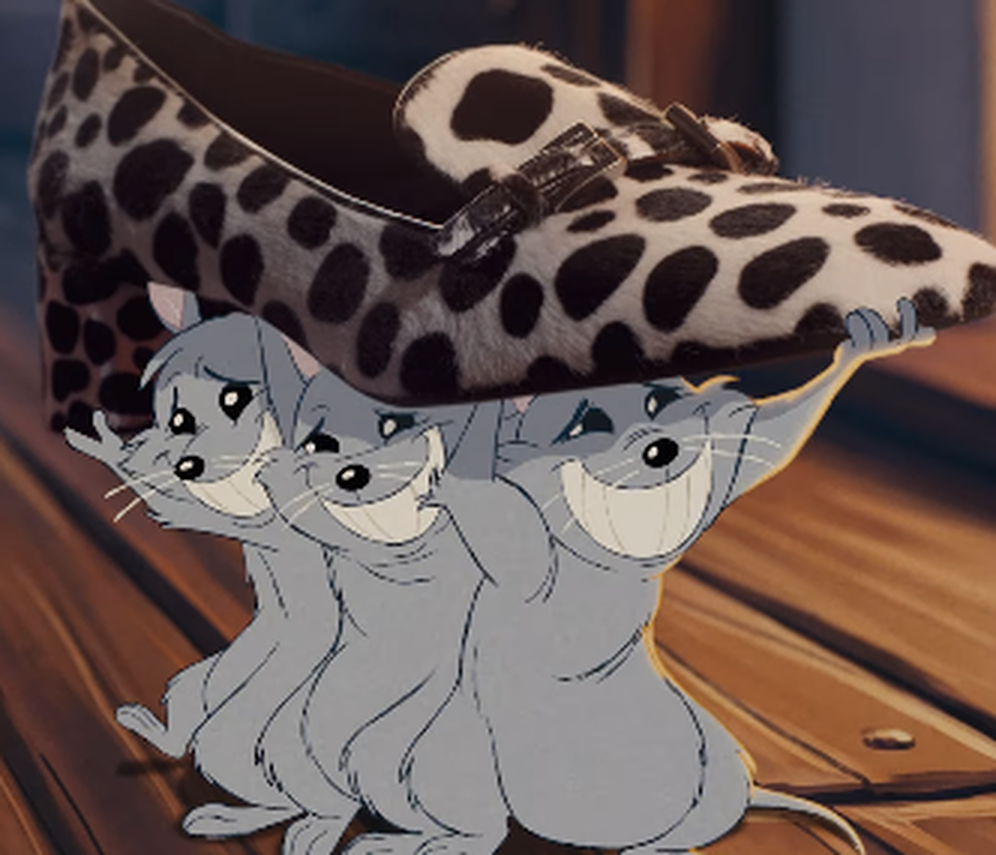
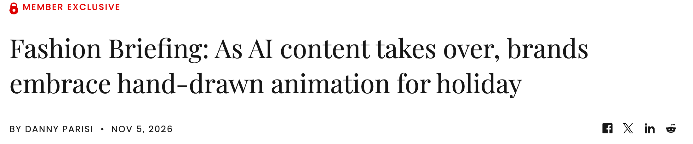

<!doctype html>
<!-- 05-hand-drawn: "Chanel and Prada are leaning hard into hand-drawn animations just to stand out from the
     AI slop.": the two names type on, a still from Prada's hand-drawn film opens (timecode running), the
     Glossy "brands embrace hand-drawn animation" headline lands under it, then an AI SLOP stamp gets struck. -->
<html lang="en">
<head>
  <meta charset="UTF-8" />
  <meta name="viewport" content="width=1080, height=1920" />
  <title>05-hand-drawn</title>
  <link rel="stylesheet" href="retro.css" />
  <script src="gsap.min.js"></script>
  <script src="retro.js"></script>
  <style>
    .shot .win__body { padding: 0; }
    .shot img { display: block; width: 100%; }
    #LX .win__body { display: flex; flex-direction: column; gap: calc(var(--u) * 1.6); padding: calc(var(--u) * 2) calc(var(--u) * 1.8); }
    .wm { font: 500 calc(var(--u) * 5.2)/1 var(--f-display); letter-spacing: .2em; }
    #LX .chip { align-self: flex-start; }
    #byhand { position: absolute; left: calc(var(--u) * 1.2); bottom: calc(var(--u) * 1.2); }
    #slop { position: absolute; left: calc(var(--u) * 60); top: calc(var(--u) * 40); font-size: calc(var(--u) * 6); padding: calc(var(--u) * .5) calc(var(--u) * 1.6) calc(var(--u) * 1); }
    #slop s { text-decoration-thickness: calc(var(--u) * .7); text-decoration-color: var(--paper); }
  </style>
</head>
<body data-world="lavender">
  <div id="root" data-composition-id="root" data-width="1080" data-height="1920">
    <div class="clip" id="stage" data-start="0" data-duration="5"></div>
  </div>
  <script>
    R.START = R.w('Chanel and Prada', 0);
    const END = 25.73, W = p => R.w(p, R.START - 0.1);

    // the two houses (layer: brands)
    const LX = R.win({ title: 'Luxury.dir', right: 'AW26', variant: 'paper', x: 59, y: 22, w: 32, h: 'auto', layer: 'brands',
      body: `<span class="wm type" id="ch">CHANEL</span><span class="wm type" id="pr">PRADA</span><span class="chip h" id="hd">✎ drawn by hand</span>` });
    LX.id = 'LX';
    R.open(LX, R.START, { from: { x: 50, y: 70 } });
    R.type(R.$('#ch'), R.START + 0.15, 30);
    R.type(R.$('#pr'), W('Prada'), 30);

    // a still from Prada's hand-drawn holiday film (layer kept as 'euronews' so the user's move still applies)
    const E = R.win({ title: 'Drawing Prada.mov', right: '▶ <span id="tc">00:00</span>', variant: 'paper', x: 9, y: 22, w: 48, h: 'auto', layer: 'euronews',
      body: `` });
    E.classList.add('shot');
    const eo = R.open(E, W('leaning'), { from: { x: 70, y: 30 } });
    R.every(eo, END, t => { const s = Math.floor((t - eo) * 15) / 15 + 12; R.$('#tc').textContent = `00:${String(Math.floor(s)).padStart(2, '0')}`; });

    // Glossy on the trend (layer: glossy)
    const G = R.win({ title: 'glossy.co', right: 'Nov 5, 2026', variant: 'paper', x: 34, y: 55, w: 57, h: 'auto', layer: 'glossy',
      body: `` });
    G.classList.add('shot');
    R.open(G, W('hand'), { from: { x: 30, y: 45 } });
    R.show(R.$('#hd'), W('animations')); R.sfx('pop', W('animations'), { vol: -5, layer: 'brands' });

    // the AI slop stamp, struck out (layer: slop)
    const S = R.box('chip-inv h', { x: 60, y: 40, html: '<s id="st">AI SLOP</s>', id: 'slop', layer: 'slop' });
    R.tl.set('#st', { textDecorationLine: 'none' }, 0);
    R.show(S, W('AI', W('from'))); R.sfx('alert', W('AI', W('from')), { vol: -8, layer: 'slop' });
    R.tl.set('#st', { textDecorationLine: 'line-through' }, R.T(W('slot.')));
    R.sfx('strike', W('slot.'), { vol: -3, layer: 'slop' });
    R.done(END);
  </script>
</body>
</html>
